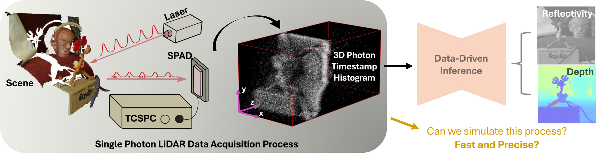
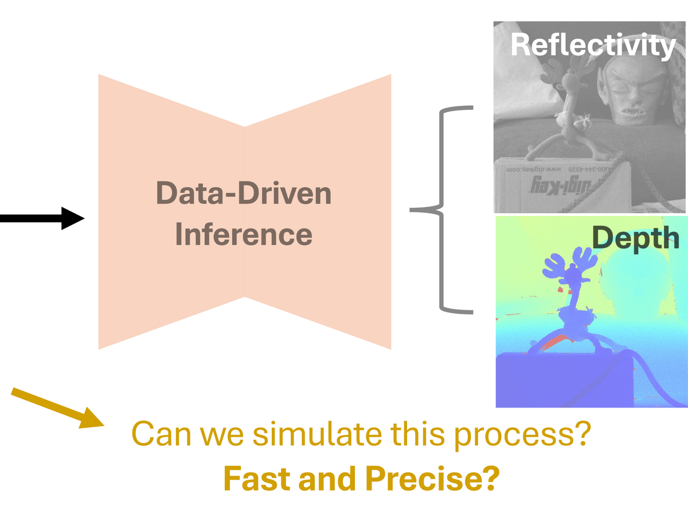
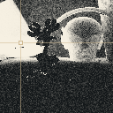
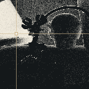
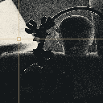
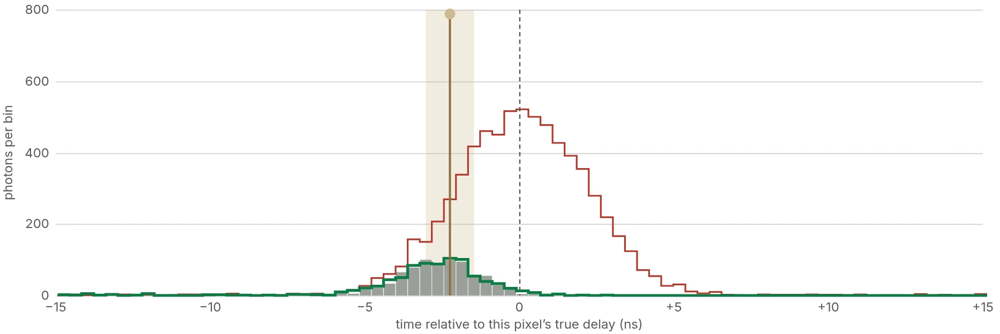

Accuracy
The photon count, finally right.
Against the sequential gold standard, renewal theory misplaces the count and the best prior model misjudges its spread; MaRS matches both, with a grid-averaged KL 30× below the best prior model’s.
ECCV 2026 · Malmö, Sweden
Accurate, efficient single-photon LiDAR simulation — even under detector dead time.
Elmore Family School of ECE, Purdue University


Cube slicer · Visualize dead-time effects
Pick a pixel to see when its photons arrived. On bright surfaces, the gold standard and MaRS register the return earlier than Poisson, by matching amounts.
Poisson

Gold standard

MaRS

Return centre vs. true delay: Poisson +0.1 ns Gold standard −2.7 ns MaRS −2.7 ns

Loading the three cubes…
The interactive slicer could not load; this is a still of the bright-surface view.
Single-photon detectors go blind for a short dead time after every detection. Poisson simulators ignore this; the sequential gold standard handles it correctly but is too slow for training data. MaRS derives the first analytic photon-count law under dead time, matching the gold standard’s statistics about 40× faster on a 128×128×1024 cube.
Accuracy
Against the sequential gold standard, renewal theory misplaces the count and the best prior model misjudges its spread; MaRS matches both, with a grid-averaged KL 30× below the best prior model’s.
Downstream
The same network, trained on each simulator and tested on gold-standard data: Poisson-trained reconstructions collapse, MaRS-trained ones hold — +17 dB reflectivity PSNR over Poisson.
Assumes a nonparalyzable detector with negligible afterpulsing; paralyzable detectors, timing jitter and afterpulsing are future work.